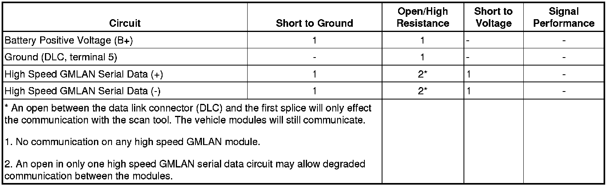

Scan Tool Does Not Communicate with High Speed GMLAN Device
Scan Tool Does Not Communicate with High Speed GMLAN Device
Diagnostic Instructions
* Perform the Diagnostic System Check - Vehicle (Initial Inspection and Diagnostic Overview) prior to using this diagnostic procedure.
* Review Strategy Based Diagnosis (Initial Inspection and Diagnostic Overview) for an overview of the diagnostic approach.
* Diagnostic Procedure Instructions (Initial Inspection and Diagnostic Overview) provides an overview of each diagnostic category.
Diagnostic Fault Information

Circuit/System Description
Modules connected to the high speed GMLAN serial data circuits monitor for serial data communications during normal vehicle operation. Operating information and commands are exchanged among the modules when the ignition switch is in any position other than OFF. The high speed GMLAN serial data circuits must be operational for the vehicle to start due to body control module (BCM) and engine control module (ECM) communications. The vehicle theft deterrent (VTD) module and ECM exchange information using the BCM as the gateway module allowing communication between the high and low speed serial data buses. The low speed GMLAN serial data circuit must also be operational for vehicle starting. The high speed GMLAN serial data bus uses two 120 ohm terminating resistors that are in parallel with the high speed GMLAN (+) and (-) circuits. One of the resistors is in the rear cargo area and the other is internal to the ECM.
Diagnostic Aids
* Communication may be available between the BCM and the scan tool with the high speed GMLAN serial data system inoperative. This condition is due to the BCM using both the high and low speed GMLAN systems.
* Use the Data Link References (Data Link References) to identify the high speed GMLAN serial data modules.
* This test is used for a total high speed GMLAN communication malfunction. If only 1 module is not communicating and sets no DTC, ensure that the vehicle is equipped with the module, then use DTC U0100-U0299 for diagnostics.
* Some modules may not have internal protection for specific voltage outputs and may open a battery positive voltage or ignition voltage source fuse. If a voltage input fuse is open and no short is found in that circuit, ensure that no module output voltage circuit is shorted to ground before replacing the module.
* An open in the DLC ground circuit terminal 5 will allow the scan tool to operate to set up the vehicle on the tool and then not communicate with the vehicle. When the scan tool is to the point of communicating with the vehicle, a message on the scan tool will indicate "no CANdi module detected" and will not communicate.
* The engine will not start when there is a total malfunction of the high speed GMLAN serial data bus. The following conditions may cause a total loss of high speed GMLAN data communication:
- A short between high speed GMLAN (+) and high speed GMLAN (-) circuits
- Any of the high speed GMLAN serial data circuits shorted to ground or voltage
- A module internal malfunction that causes a short to voltage or ground on the high speed GMLAN circuits
Reference Information
Schematic Reference
Data Communication Schematics (Electrical Diagrams)
Connector End View Reference
Component Connector End Views (Connector Views)
Description and Operation
Data Link Communications Description and Operation (Description and Operation)
Electrical Information Reference
* Circuit Testing (Component Tests and General Diagnostics)
* Connector Repairs (Component Tests and General Diagnostics)
* Testing for Intermittent Conditions and Poor Connections (Component Tests and General Diagnostics)
* Wiring Repairs (Component Tests and General Diagnostics)
Scan Tool Reference
Control Module References (Programming and Relearning) for Scan Tool information
Circuit/System Verification
Attempt to communicate with all modules on the high speed GMLAN bus.
If any high speed module communicates and any DTC beginning with a U exists, refer to Diagnostic Trouble Code (DTC) List - Vehicle (Diagnostic Trouble Code Descriptions) .
If any high speed module communicates and no DTC beginning with a U exists, refer to DTC U0100-U0299 (U0100) .
Circuit/System Testing
High Speed GMLAN Initial Test
1. Ignition OFF, test for less than 1.0 ohm of resistance between the data link connector (DLC) ground circuit terminal 5 and ground.
• If greater than the specified range, test the ground circuit for an open/high resistance.
2. Disconnect the 2 nd and 3 rd combs from the JX200 splice pack.
3. Install 3 amp fused jumper wires between the following JX200 terminals.
* Terminal 21 and terminal 22
* Terminal 32 and terminal 33
* Terminal 12 and terminal 16
4. Ignition ON, attempt to communicate with the electronic suspension control module (ESC).
• If communication is established refer to DIAGNOSTIC 2.
• If communication is not established, refer to DIAGNOSTIC 1.
DIAGNOSTIC 1
1. Connect the JX200 splice pack combs.
2. Remove the terminator resistor located in the right rear cargo area.
3. Test for 108-132 ohms of resistance between terminals A and B of the terminator resistor.
• If not within the specified range, replace the resistor.
4. Connect the harness connector at the terminator resistor.
5. Ignition OFF, disconnect the X3 harness connector at the BCM.
6. Ignition OFF, test for less than 2 ohms of resistance between the DLC serial data circuit terminal 6 and BCM serial data circuit terminal 8.
• If greater than the specified range, test the serial data circuit for open/high resistance.
7. Ignition OFF, disconnect the X2 and X4 harness connectors at the BCM.
8. Test for less than 5 ohms of resistance between the following ground circuit terminals and ground.
* X3 terminal 1
* X3 terminal 5
* X4 terminal 9
• If greater than the specified range, test the ground circuit for an open/high resistance.
9. Ignition ON, verify a test lamp illuminates between the following B+ circuit terminals and ground.
* X2 terminal 2
* X3 terminal 2
* X3 terminal 3
* X4 terminal 1
* X4 terminal 2
* X4 terminal 3
* X4 terminal 4
* X4 terminal 10
• If the test lamp does not illuminate, test the B+ circuit for a short to ground or an open/high resistance. If the circuit fuse is open, also test the B+ output circuits for a short to ground.
10. Ignition OFF, test for infinite resistance between the following serial data circuits of the DLC and ground.
* Terminal 6
* Terminal 14
• If less than the specified value, test the serial data circuits for a short to ground.
11. Ignition ON, test for less than 1-volt between the following serial data circuits of the DLC and ground.
* Terminal 6
* Terminal 14
• If greater than the specified range, test the serial data circuit for a short to voltage.
12. Ignition OFF, test for infinite resistance between the DLC serial data circuit terminal 6 and terminal 14.
• If less than the specified value, test for a short between the serial data circuits.
13. Connect the X2, X3 and X4 harness connector at the BCM.
14. Ignition OFF, disconnect the harness connector of the ESC module.
15. Ignition ON, attempt to communicate with the TCM. Communication should not be available.
• If communication is established, remove the terminator resistor and test the following serial data circuits between the ESC module and the terminator resistor for a short between the circuits, short to ground or a short to voltage. If the circuits test normal, replace the ESC module.
* ESC module terminal 24
* ESC module terminal 25
* ESC module terminal 24 and terminal 25
16. Ignition OFF, disconnect the X2 harness connector of the vehicle communication interface module (VCIM).
17. Ignition ON, attempt to communicate with the TCM. Communication should not be available.
• If communication is established, test the following serial data circuits between the VCIM and the ESC module for a short between the circuits, short to ground or a short to voltage. If the circuits test normal, replace the VCIM.
* VCIM terminal 3
* VCIM terminal 4
* VCIM terminal 3 and terminal 4
18. Ignition OFF, disconnect the X3 harness connector at the BCM.
19. Ignition OFF, test for infinite resistance between the following serial data circuits and ground.
* Terminal 16
* Terminal 17
• If less than the specified value, test the serial data circuit for a short to ground.
20. Ignition ON, test for less than 1-volt between the following serial data circuits and ground.
* Terminal 16
* Terminal 17
• If greater than the specified range, test the serial data circuit for a short to voltage.
21. Ignition OFF, test for infinite resistance between the serial data circuit terminal 16 and terminal 17.
• If less than the specified value, test for a short between the serial data circuits.
22. If the circuits test normal, replace the BCM.
DIAGNOSTIC 2
1. Connect the JX200 splice pack connector.
2. Ignition OFF, disconnect the appropriate harness connector listed below at the ECM.
* RPO LY7 - X2
* RPO LH2 - X3
3. Ignition ON, attempt to communicate with the TCM. Communication should not be available.
• If communication is established, replace the ECM.
4. Ignition OFF, disconnect the harness connector at the electronic brake control module (EBCM).
5. Ignition ON, attempt to communicate with the TCM. Communication should not be available.
• If communication is established, test the following serial data circuits between the ECM and the EBCM for a short between the circuits, short to ground or a short to voltage. If the circuits test normal replace the EBCM.
* EBCM terminal B12
* EBCM terminal B9
* EBCM terminal B12 and terminal B9
6. Ignition OFF, disconnect the harness connector at the TCM.
7. Ignition OFF, test for infinite resistance between the following serial data circuits of TCM and ground.
* RPO LY7 - Terminal F20
* RPO LY7 - Terminal F21
* RPO LH2 - Terminal 13
* RPO LH2 - Terminal 14
• If less than the specified value, test the serial data circuit for a short to ground.
8. Ignition ON, test for less than 1-volt between the following serial data circuits of TCM and ground.
* RPO LY7 - Terminal F20
* RPO LY7 - Terminal F21
* RPO LH2 - Terminal 13
* RPO LH2 - Terminal 14
• If greater than the specified range, test the serial data circuit for a short to voltage.
9. Ignition OFF, test for infinite resistance between the following serial data circuit terminals.
* RPO LY7 - Terminal F20 and terminal F21
* RPO LH2 - Terminal 13 and terminal 14
• If less than the specified value, test for a short between the serial data circuits.
10. If all circuits test normal, replace the TCM.
Repair Instructions
Perform the Diagnostic Repair Verification (Verification Tests) after completing the repair.
Control Module References (Programming and Relearning) for control module replacement, setup, and programming
GMLAN Wiring Repairs (Component Tests and General Diagnostics)